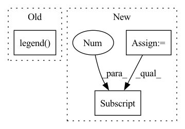

Pattern ID :34848
Before Change
ax.set_xticks([0, 4, 8, 12, 16, 20, 24])
ax.set_xlabel("Layer")
ax.set_ylabel("Normalized MSE")
ax.legend( ["FNO", "TF-FNO", "M-FNO", "F-FNO"], frameon=False)
def plot_ablation(ax):
layers_2 = [4, 8, 12, 16, 20, 24]After Change
groups = [f"ablation/zongyi_markov/{i}_layers" for i in layers_1]
losses = get_test_losses(dataset, groups)
container = plot_line(xs, losses, ax, color=pal[2], linestyle=":")
lines.append(container.lines[0] )
groups = [f"ablation/no_factorization/{i}_layers" for i in layers_2]
losses = get_test_losses(dataset, groups)In pattern: SUPERPATTERN
Frequency: 3
Non-data size: 3
Instances Fragment ID: 99908406
Project Name: alasdairtran/fourierflow
Commit Name: c2268f90cc720dda0e2298528b14a79d198d194c
Time: 2021-09-24
Author: alasdair.tran@gmail.com
File Name: fourierflow/commands/plot.py
M Class Name: AnonimousClass
N Class Name: AnonimousClass
M Method Name: plot_performance_vs_layer(1)
N Method Name: plot_performance_vs_layer(1)
M Parent Class:
N Parent Class:
M File Name: fourierflow/commands/plot.py
N File Name: fourierflow/commands/plot.py
M Start Line: 58
M End Line: 80
N Start Line: 74
N End Line: 102
Before Change
plt.plot(x, results[i, x], marker=".", label=f.replace(".txt", ""))
plt.title(s[i])
if i == 0:
plt.legend()
fig.tight_layout()
fig.savefig("results.png", dpi=300)
After Change
// import os; os.system("wget https://storage.googleapis.com/ultralytics/yolov3/results_v3.txt")
fig, ax = plt.subplots(2, 5, figsize=(14, 7))
ax = ax.ravel()
s = ["X + Y", "Width + Height", "Confidence", "Classification", "Train Loss", "Precision", "Recall", "mAP", "F1",
"Test Loss"]
for f in sorted(glob.glob("results*.txt") + glob.glob("../../Downloads/results*.txt")):
results = np.loadtxt(f, usecols=[2, 3, 4, 5, 6, 9, 10, 11, 12, 13]).T
n = results.shape[1] // number of rows
x = range(start, min(stop, n) if stop else n)
for i in range(10):
ax[i].plot(x, results[i, x], marker=".", label=f.replace(".txt", ""))
ax[i].set_title(s[i])
ax[0] .legend()
fig.tight_layout()
fig.savefig("results.png", dpi=300)
Fragment ID: 99908418
Project Name: nightsnack/yolobile
Commit Name: cc50757d95b0e720fa6a47b05b8655955046bb89
Time: 2019-04-18
Author: glenn.jocher@ultralytics.com
File Name: utils/utils.py
M Class Name: AnonimousClass
N Class Name: AnonimousClass
M Method Name: plot_results(2)
N Method Name: plot_results(2)
M Parent Class:
N Parent Class:
M File Name: utils/utils.py
N File Name: utils/utils.py
M Start Line: 523
M End Line: 536
N Start Line: 523
N End Line: 534
Before Change
ax.set_xticks([0, 4, 8, 12, 16, 20, 24])
ax.set_xlabel("Layer")
ax.set_ylabel("Normalized MSE")
ax.legend( ["no factorize", "no sharing", "F-FNO"], frameon=False)
def get_step_losses(dataset, group):
api = wandb.Api()After Change
groups = [f"markov/{i}_layers" for i in layers_2]
losses = get_test_losses(dataset, groups)
container = plot_line(xs, losses, ax, color=pal[3])
lines.append(container.lines[0] )
ax.set_xticks([0, 4, 8, 12, 16, 20, 24])
ax.set_xlabel("Number of Layers") Fragment ID: 99908412
Project Name: alasdairtran/fourierflow
Commit Name: c2268f90cc720dda0e2298528b14a79d198d194c
Time: 2021-09-24
Author: alasdair.tran@gmail.com
File Name: fourierflow/commands/plot.py
M Class Name: AnonimousClass
N Class Name: AnonimousClass
M Method Name: plot_ablation(1)
N Method Name: plot_ablation(1)
M Parent Class:
N Parent Class:
M File Name: fourierflow/commands/plot.py
N File Name: fourierflow/commands/plot.py
M Start Line: 85
M End Line: 103
N Start Line: 107
N End Line: 129